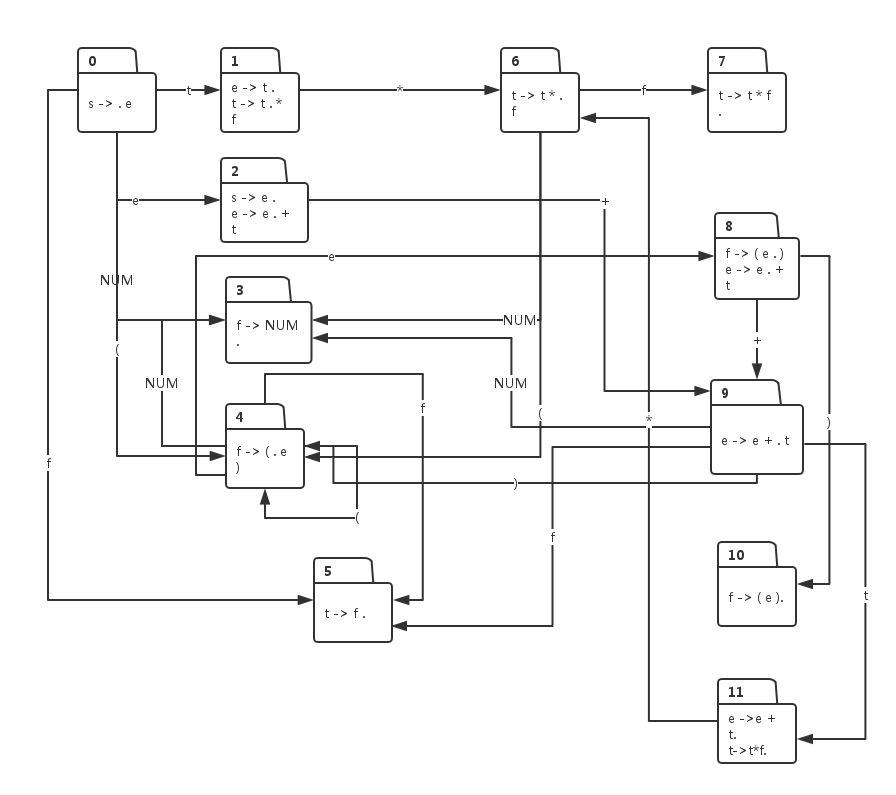

构建LR语法的有限状态自动机
大家好，欢迎大家来到Coding迪斯尼。
阅读博客的朋友可以到我的网易云课堂中，通过视频的方式查看代码的调试和执行过程：
http://study.163.com/course/courseMain.htm?courseId=1002830012
我开启了新的算法课程:
如何进入google,算法面试技能全面提升指南
http://study.163.com/course/courseMain.htm?courseId=1002942008
在课程中，我将facebook, google, ms,amazon, BAT等公司使用的面试算法题收集起来进行分析，喜欢算法，特别是准备面试，冲击一线互联网公司的朋友不要错过。
前一节，我们看到，要使用LR语法来解析输入文本，需要根据语法规则构建一个有限状态自动机，然后根据自动机创建一个解析表，然后我们的解析程序才能依赖解析表对输入文本进行解析。本节我们主要研究，在给定了LR语法后，有限状态自动机是如何构建的。
我们先给定一组LR语法，如下：
0. s -> e
1. e -> e + t
2. e -> t
3. t -> t * f
4. t -> f
5. f -> ( e )
6. f -> NUM
当利用本节的算法后，上面语法将构建出如下形式的有限状态自动机：

上面的图看起来复杂凌乱，只要大家理解了本节描述的算法，上面的状态机图完全可以由程序自动生成。
接下来我们看看，构建算法的具体步骤：
（1） 初始化：状态0是状态机的初始状态，它包含着语法表达式中的起始表达式，也就是编号为0的表达式：
0
s -> . e
表达式我们做了一些更改，就是在表达式 -> 右边, 它跟着一个符号 “.”, 这个点的作用很重要。
（2） 对 . 右边的符号做闭包操作：如果 . 右边的符号是一个非终结符，那么肯定有某个表达式，-> 左边是该非终结符，把这些表达式添加进来，当前，. 右边的非终结符是 e, 于是把 e在 -> 左边的表达式添加进来：
0
s -> . e
e -> . e + t
e -> .t
对于新加进来的表达式，如果 . 右边的非终结符对应的表达式没有加进来，则继续将他们对应的表达式添加进来，根据上面的例子，我们需要把 t 对应的表达式添加进来：
0
s -> . e
e -> . e + t
e -> . t
t ->. t * f
t -> . f
继续重复闭包操作，新引入的表达式中，. 右边的非终结符f 对应的表达式还没有引入，于是下一步是引入f 对应的表达式：
0
s -> . e
e -> . e + t
e -> . t
t ->. t * f
t -> . f
f -> . ( e )
f -> . NUM
由于引入的表达式, . 右边都是终结符，所以闭包操作结束。
（3） 对引入的表达式进行分区：把 . 右边拥有相同非终结符的表达式划入一个分区：
0
e -> . t
t -> . t * f
s -> . e
e -> . e + t
f -> . NUM
f -> . ( e )
t -> . f
把每个分区中的表达式中的 . 右移动一位，形成新的状态节点，例如第一个分区中，表达式中的 . 右移一位后生成新节点1：
1
e -> t .
t ->t . * f
第二个分区表达式， . 右移一位后形成新的节点2：
2
s -> e .
e ->e . + t
第三个分区， . 右移一位后形成新的节点3:
3
f -> NUM .
第四个分区, . 右移动一位后形成新的节点4：
4
f -> ( . e )
第5个分区，. 右移动一位后形成新的节点5
5
t -> f .
（4） 构建原有节点与新生节点间的跳转关系
由于节点1表达式中， . 左边的符号是 t, 所以当状态机处于状态0时，输入时 t 时， 跳转到状态1：
0 – t -> 1
由于节点2表达式中，. 左边的符号是e, 所以当状态机处于状态 0 ，且输入时符号e时，跳转到状态2：
0 – e -> 2
由于节点 3 表达式中， . 左边的符号是 NUM, 所以当状态机处于状态 0 , 输入是符号 NUM时，跳转到状态 3：
0 – NUM -> 3
由于节点4表达式中，. 左边的符号是 (, 所以当状态机处于状态0，输入是 ( 时， 状态机跳转到状态4：
0 – ( -> 4.
由于节点5表达式中，. 左边的符号是f, 所以当状态机处于状态0，输入是符号 f 时，状态机由状态0跳转到状态5：
0 – f -> 5.
对每个新生成的状态节点重复上面的算法，最终将构成给定的状态机图。